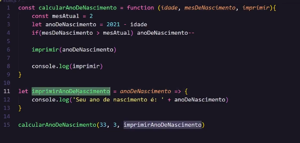
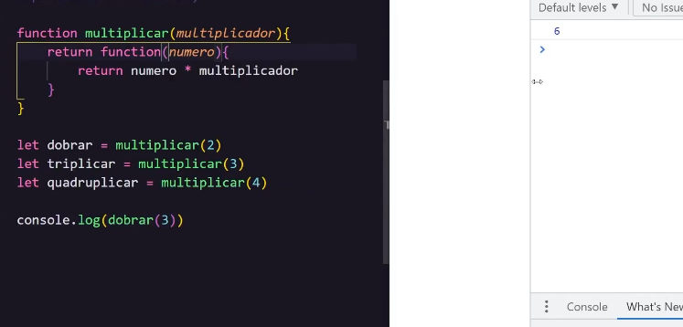

Escopo é o que gerencia a disponibilidade das variáveis.
Exercício escopo de blocoA const não pode ser acessada dentro de um bloco fora dele, ela é limitada a aquel bloco ao qual foi inicializada. Um bloco de código define um escopo para variáveis do tipo const e let
Existe no javascript o bloco autonomo, e essas variáveis também são limitadas ao bloco. Mas no caso do var, ele estrapola os limites do escopo de bloco.
Exercício escopo autonomoDiferente do bloco a função é capaz de delimitar um escopo para variável do tipo var.
Exercício escopo funçãoE caso eu crie uma função dentro de outra função, ela também ficará restrita ao escopo da função a qual pertence.
Exercício escopo de função com declaração de uma função dentro.O escopo global é o escopo que pode ser acessado de qualquer parte do código. Uma variável no escopo global pode ser chamada de qualquer escopo. O escopo global não precisa ser necessáriamente dentro da folha do javascript, se ela for declarada na folha de html ainda é um escopo global, desde que seja declarada antes de o documento ser chamado no HTML.
exercício escopo global.O hoisting é um comportamento que acontece por debaixo dos panos no javascirpt, de forma geral as variáveis podem ser pensadas de duas maneiras, a declaração e a atribuição. Na prática o javascript entende elas como duas instruções separadas. Veja o exercício.
Exercício Declaracao e atribuição.Todas as declarações de variáveis ao ser executadas são movidas para o topo do escopo limite, seja ele global ou local. Isso é chamado de hoisting, ele move somente a declaração, e não a atribuição, essa é deixada no lugar onde foi atribuída.
Exercício hoistingEra esperado no exercício que houvesse um erro de referência, mas pelo tipo de hoisting sofrido pela variavel do tipo var, ela recebe um undefined no lugar de erro. Já as variáveis do tipo let e const não podem ser lidas ou escritas até que tenham sido totalmente inicializadas. Então dará erro de referência, apesar de ser içada não retornará valor nenhum
Exercício de Hoisting letPara que a variável seja dada como undefined, é preciso que seja ao menos inicializada antes de ser chamada. E isso garante uma melhor prática, por que isso obriga a declarar antes de usar.
Exercício erro de referência no consoleFunções anônimas são funções que não tem um nome, ela pode ser usada para atribuir uma função a uma variável por exemplo e retornar algo da função para variável.
Exercício função anonimaDessa forma do exercício é possível ter uma função dentro da variável. Ela pode ser invocada como função, ou como resultado da função.
è possível passar parâmetros para essa função as colocando dentro dos parâmetros normais. Essa função do caso pode não ter um nome, mas pode ser chamada pelo nome da variável.
Também são funções anonimas que são escritas de forma reduzida. A primeira redução é trocar a palavra function por =>. A segunda redução é que caso a função só tenha um parâmetro não será preciso colocar os parênteses, apenas ele e a arrow function.
E caso a função só tenha uma linha é possível remover também as chaves e o return, deixando tudo na mesma linha.
Também chamado de callback, funções que recebem funções como parâmetro, ou retornam outras funções.
Uma função pode retornar outra função ao invez de uma string ou números.
Exercício Higher order function Neste exercício uma função é passada como parâmetro para outra função. Observe que a primeira função criada "calcularAnoDeNascimento" é armazenada dentro de uma variável e é uma função anonima. Portanto, para que ela seja chamada é preciso ter sido inicializada antes.
Os parâmetros da função estão nulos até que se receba algo, mas existem 3 para entrada.
Abaixo tem a função anonima "imprimirAnoDeNascimento" que recebe o parametro anoDeNascimento.
A chamada da função calcular ano de nascimento foram informado 3 valores, (33, 3, imprimirAnoDeNascimento) quando a função é anonima é colocada sem os parênteses ela funciona como uma variável. Dentro da função que recebeu os parâmetros foram feitos alguns calculos e condições, e um dos valores obtidos foi dado como parâmetro para a função que foi passada na variável imprimir. Importante observar que a variavel ano de nascimento poderia ter qualquer nome, isso não impediria de ser passada como parâmetro. E que a chamada dessa função só ocorreu por que se usou o parâmetro que foi recebido com parênteses e um paâmetro para ele. Se eu apenas desse um console.log nesse parametro imprimir, seria mostrada a função que foi recebida e não a execulção dela.
Pense que você precisa fazer calculos matematicos para dobrar, triplicar e quadruplicar um número aleatorio. Você poderia fazer assim:
function dobrar(numero){
return numero * 2
}
function triplicar(numero){
return numero * 3
}
function quadruplicar(numero){
return numero * 4
}
console.log(dobrar(2))
Todas as vezes que eu precisar de um novo multiplicador terei de criar uma noova função e setar manualmente qual será o valor de multiplicação que aquela função irá retornar.
A próxima forma de fazer isso é fazer com que a função retorne uma função e resolver com um parâmetro para cada.
Exercício higher order functionAgora neste caso é possível criar uma função que multiplica retornando uma função com o número multiplicado. E para acessar o parâmetro das duas funções será preciso guardar em uma variável a função de multiplicação com seu parâmetro
Ao guardar em uma variavel a função, se usar um console.log será mostrado a função, a questão é, salve o parâmetro, quando a função for chamada já tendo parâmetro, o parâmetro informado na chamada da variável será para a função que armazenou, e a próxima para função da qual retorna.
Dessa forma, cada novo tipo de parâmetro multiplicador que for cliado é só declarar a variável atribuindo a função com seu parâmetro multiplicador.
Ele pode armazenar qualquer tipode dado numerico, string, boolean e até mesmo outro array.
Exercício arrayO array pode ser identificado por ser aberto e fechado por colchetes e os elementos do array são separados por vírgula. O acesso dos itens do array é feito pelo nome da variável e seu índice, a posição do elemento, passado dentro de colchetes. Caso a posição da chave não conste no array ele irá retornar undefined.
Quando um array tem um arry dentro dele, ele é multidimensional. Ele pode ter arrays infinitos dentro, mas é normal encontrar apenas bidimensionais.
Exercício array multidimensionalPara acessar um array interno dentro do outro será preciso colocar mais de uma chave índice após a outra. Para imprimir de forma que fique mais fácil de visualizar no console é possível usar o método table()
Para iterar sobre um array é nessesário usa um laço de repetição como o for
for(let i = 0; i < frutas.length; i++){
console.log('Fruta ' + frutas[i])
}
Dessa forma será possível acessar uma propriedade do aray.
Outra forma de fazer isso é usando o laço forEach() Dessa forma é presico acessar a propriedade e colocar .forEach() que é o método. Essa função é um callback pois uma função é passada como parâmetro para ela. Existem 3 parâmetros que podem ser passados no callback do forEach:
Outros métodos que podem ser usados no array são